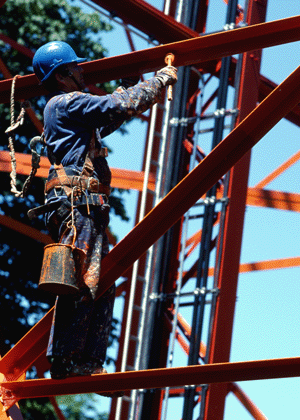

Durch Umschlingen der Mastkonstruktion mit Bandschlaufen werden Anschlagpunkte für das Sicherungsseil geschaffen. Bauliche Maßnahmen an der Mastkonstruktion sind nicht erforderlich. Die Schlaufenmethode ist generell für alle Stahlgittermaste geeignet.